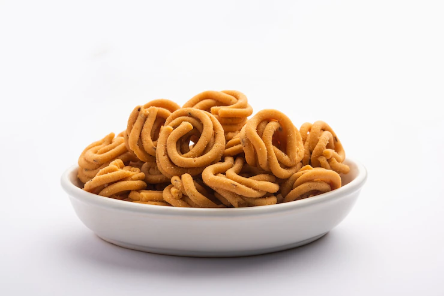
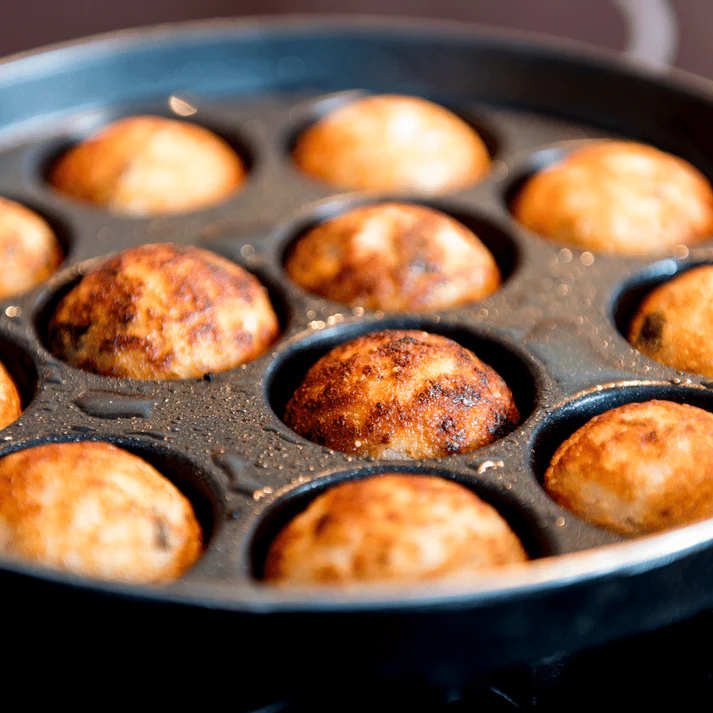

 Well, snack time is definitely something we all look forward to.
There's nothing quite like the joy of munching on crispy, spicy, cheesy and flavourful treats,
and if these dishes are home-made, it's all the more better.
Indians love their savory treats, and almost every household has their own specialties that they prepare for festivals or special occasions.
I love making cashew-studded pakoras—they have to be eaten as soon as they're done,
indecently hot with steam rising as you break them into bite-sized pieces.

I also love my mother's golden paniyarams, served with fresh coconut chutney or hot sambar for dunking.
But for those who would rather eat than cook,
sweet shops and restaurants all across South India consistently serve a variety of savory options.